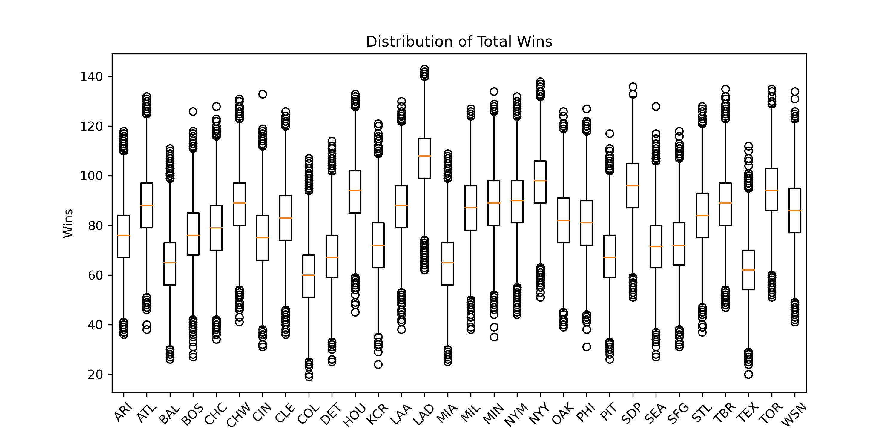
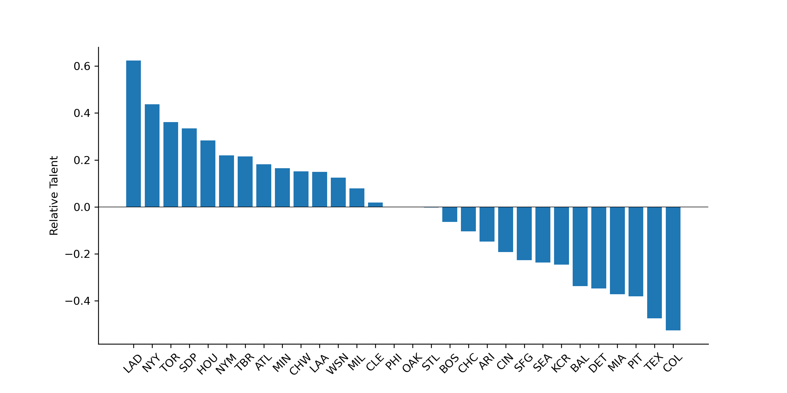
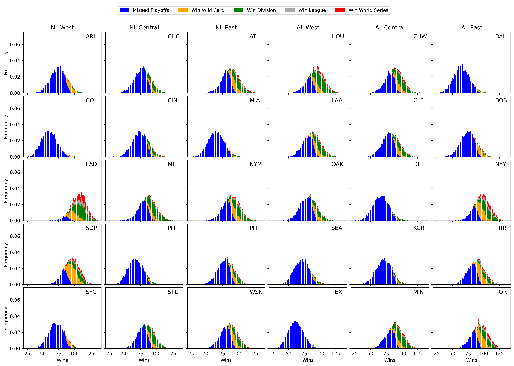

March 29, 2021
I'll leave the detailed commentary to the professionals, but with opening day just around the corner, here's how my model (henceforth known as Satchel) has the 2021 MLB season playing out.1 For an overview of how the model works, check out my earlier post. I'll also talk about how the model has changed since I first introduced it at the end of this post.

| Team | Mean Wins | Mean Losses | Max Wins | Min Wins | Win Division (%) | Make Wild Card (%) | Make Playoffs (%) | Win League (%) | Win WS (%) |
|---|---|---|---|---|---|---|---|---|---|
| HOU | 93.5562 | 68.4438 | 133 | 45 | 49.67 | 15.42 | 65.09 | 14.19 | 6.90 |
| LAA | 87.5138 | 74.4862 | 130 | 38 | 27.96 | 17.21 | 45.17 | 7.87 | 3.69 |
| OAK | 81.8608 | 80.1392 | 126 | 39 | 16.79 | 12.29 | 29.08 | 4.28 | 1.56 |
| SEA | 71.6376 | 90.3624 | 128 | 27 | 4.56 | 4.70 | 9.26 | 1.04 | 0.41 |
| TEX | 62.1421 | 99.8579 | 112 | 20 | 1.02 | 1.19 | 2.21 | 0.16 | 0.04 |
| Team | Mean Wins | Mean Losses | Max Wins | Min Wins | Win Division (%) | Make Wild Card (%) | Make Playoffs (%) | Win League (%) | Win WS (%) |
|---|---|---|---|---|---|---|---|---|---|
| MIN | 88.9595 | 73.0405 | 134 | 35 | 36.95 | 14.29 | 51.24 | 9.46 | 4.36 |
| CHW | 88.7453 | 73.2547 | 131 | 41 | 34.61 | 14.88 | 49.49 | 8.53 | 3.89 |
| CLE | 82.7298 | 79.2702 | 126 | 36 | 20.05 | 11.65 | 31.70 | 4.59 | 1.88 |
| KCR | 71.7534 | 90.2466 | 121 | 24 | 5.37 | 4.44 | 9.81 | 0.99 | 0.37 |
| DET | 67.3900 | 94.6100 | 114 | 25 | 3.02 | 2.27 | 5.29 | 0.52 | 0.22 |
| Team | Mean Wins | Mean Losses | Max Wins | Min Wins | Win Division (%) | Make Wild Card (%) | Make Playoffs (%) | Win League (%) | Win WS (%) |
|---|---|---|---|---|---|---|---|---|---|
| NYY | 97.2213 | 64.7787 | 138 | 51 | 44.26 | 28.18 | 72.44 | 20.53 | 11.53 |
| TOR | 94.0163 | 67.9837 | 135 | 51 | 32.19 | 31.42 | 63.61 | 16.31 | 8.70 |
| TBR | 88.4970 | 73.5030 | 135 | 47 | 18.56 | 28.09 | 46.65 | 8.91 | 4.40 |
| BOS | 76.3196 | 85.6804 | 126 | 27 | 4.16 | 11.40 | 15.56 | 2.21 | 0.85 |
| BAL | 65.0224 | 96.9776 | 111 | 26 | 0.83 | 2.57 | 3.40 | 0.41 | 0.17 |
| Team | Mean Wins | Mean Losses | Max Wins | Min Wins | Win Division (%) | Make Wild Card (%) | Make Playoffs (%) | Win League (%) | Win WS (%) |
|---|---|---|---|---|---|---|---|---|---|
| LAD | 106.9540 | 55.0460 | 143 | 62 | 69.81 | 22.50 | 92.31 | 35.28 | 21.61 |
| SDP | 95.7330 | 66.2670 | 136 | 51 | 26.29 | 44.79 | 71.08 | 14.35 | 7.60 |
| ARI | 75.6193 | 86.3807 | 118 | 36 | 2.35 | 12.69 | 15.04 | 1.41 | 0.67 |
| SFG | 72.3000 | 89.7000 | 118 | 31 | 1.40 | 7.88 | 9.28 | 0.95 | 0.42 |
| COL | 59.9863 | 102.0137 | 107 | 19 | 0.15 | 1.24 | 1.39 | 0.11 | 0.03 |
| Team | Mean Wins | Mean Losses | Max Wins | Min Wins | Win Division (%) | Make Wild Card (%) | Make Playoffs (%) | Win League (%) | Win WS (%) |
|---|---|---|---|---|---|---|---|---|---|
| MIL | 87.0170 | 74.9830 | 127 | 38 | 38.54 | 10.64 | 49.18 | 7.44 | 3.00 |
| STL | 83.7571 | 78.2429 | 128 | 37 | 28.86 | 10.25 | 39.11 | 5.36 | 2.16 |
| CHC | 78.8213 | 83.1787 | 128 | 34 | 17.08 | 7.45 | 24.53 | 3.04 | 1.25 |
| CIN | 75.2999 | 86.7001 | 133 | 31 | 11.47 | 5.98 | 17.45 | 1.91 | 0.62 |
| PIT | 67.6113 | 94.3887 | 117 | 26 | 4.05 | 2.64 | 6.69 | 0.60 | 0.18 |
| Team | Mean Wins | Mean Losses | Max Wins | Min Wins | Win Division (%) | Make Wild Card (%) | Make Playoffs (%) | Win League (%) | Win WS (%) |
|---|---|---|---|---|---|---|---|---|---|
| NYM | 89.6429 | 72.3571 | 132 | 44 | 32.85 | 20.08 | 52.93 | 10.04 | 4.82 |
| ATL | 88.3486 | 73.6514 | 132 | 38 | 29.14 | 19.19 | 48.33 | 8.87 | 4.17 |
| WSN | 85.8509 | 76.1491 | 134 | 41 | 22.87 | 18.72 | 41.59 | 6.61 | 2.95 |
| PHI | 80.8530 | 81.1470 | 127 | 31 | 13.86 | 13.52 | 27.38 | 3.80 | 1.52 |
| MIA | 64.8403 | 97.1597 | 109 | 25 | 1.28 | 2.43 | 3.71 | 0.23 | 0.03 |
Most divisions project to be relatively close races. Although the Yankees have a three game edge over Toronto in the AL East, it wouldn't take much for Toronto to jump ahead. The NL Central is in a similar situation with the Brewers holding a slight lead on the Cardinals. The AL Central and NL East are both effectively toss up, though I have yet to add an "LOLMets" factor to the model so I suspect we may be underestimating Atlanta's chances of ending the season on top of the East.2
Neither the AL nor NL West look particularly competitive as Houston projects to bounce back from a subpar 2020 regular season and the Dodgers once again run away with it in the NL. This is unfortunate for the Padres as their projected 96 wins would be enough to land at the top of any other division except the AL East. Two factors explain why Satchel projects the Dodgers to be so dominant this season: first, based on our measure of talent, the Dodgers are head and shoulders above every other team. Second, they have the weakest schedule in baseball.3 The figure and table below help visualize these points.

| Team | Schedule Strength | |
|---|---|---|
| 1 | BAL | 0.088691 |
| 2 | BOS | 0.062504 |
| 3 | MIA | 0.057176 |
| 4 | COL | 0.039973 |
| 5 | TEX | 0.025384 |
| 6 | TBR | 0.017969 |
| 7 | TOR | 0.015707 |
| 8 | SEA | 0.007129 |
| 9 | NYY | 0.006288 |
| 10 | PHI | 0.005476 |
| 11 | SFG | 0.004386 |
| 12 | DET | 0.004100 |
| 13 | KCR | -0.002096 |
| 14 | ARI | -0.004922 |
| 15 | WSN | -0.006177 |
| 16 | NYM | -0.011025 |
| 17 | ATL | -0.011275 |
| 18 | LAA | -0.017886 |
| 19 | OAK | -0.018126 |
| 20 | PIT | -0.028874 |
| 21 | CLE | -0.031035 |
| 22 | MIN | -0.044572 |
| 23 | CIN | -0.045486 |
| 24 | CHC | -0.045514 |
| 25 | HOU | -0.047139 |
| 26 | CHW | -0.049937 |
| 27 | SDP | -0.051220 |
| 28 | STL | -0.071507 |
| 29 | MIL | -0.076807 |
| 30 | LAD | -0.085321 |
Given how the model works, it isn't surprising then that the Dodgers are the World Series favorites, or that they're followed by the next most talented teams:
| Team | Win WS (%) | |
|---|---|---|
| 1 | LAD | 21.61 |
| 2 | NYY | 11.53 |
| 3 | TOR | 8.70 |
| 4 | SDP | 7.60 |
| 5 | HOU | 6.90 |
| 6 | NYM | 4.82 |
| 7 | TBR | 4.40 |
| 8 | MIN | 4.36 |
| 9 | ATL | 4.17 |
| 10 | CHW | 3.89 |
| 11 | LAA | 3.69 |
| 12 | MIL | 3.00 |
| 13 | WSN | 2.95 |
| 14 | STL | 2.16 |
| 15 | CLE | 1.88 |
| 16 | OAK | 1.56 |
| 17 | PHI | 1.52 |
| 18 | CHC | 1.25 |
| 19 | BOS | 0.85 |
| 20 | ARI | 0.67 |
| 21 | CIN | 0.62 |
| 22 | SFG | 0.42 |
| 23 | SEA | 0.41 |
| 24 | KCR | 0.37 |
| 25 | DET | 0.22 |
| 26 | PIT | 0.18 |
| 27 | BAL | 0.17 |
| 28 | TEX | 0.04 |
| 29 | MIA | 0.03 |
| 30 | COL | 0.03 |
Finally, we have the most likely matchups for each round of the post season:
| Matchup | Probability | |
|---|---|---|
| 1 | NYM-SDP | 0.0691 |
| 2 | ATL-SDP | 0.0671 |
| 3 | SDP-WSN | 0.0628 |
| 4 | PHI-SDP | 0.0436 |
| 5 | ARI-SDP | 0.0412 |
| 6 | MIL-SDP | 0.0353 |
| 7 | LAD-NYM | 0.0347 |
| 8 | LAD-WSN | 0.0338 |
| 9 | SDP-STL | 0.0334 |
| 10 | ATL-LAD | 0.0330 |
| Matchup | Probability | |
|---|---|---|
| 1 | TBR-TOR | 0.0556 |
| 2 | NYY-TBR | 0.0458 |
| 3 | NYY-TOR | 0.0373 |
| 4 | LAA-TOR | 0.0372 |
| 5 | HOU-TOR | 0.0318 |
| 6 | LAA-NYY | 0.0313 |
| 7 | LAA-TBR | 0.0306 |
| 8 | HOU-NYY | 0.0285 |
| 9 | HOU-TBR | 0.0279 |
| 10 | MIN-TOR | 0.0279 |
| Matchup | Probability | |
|---|---|---|
| 1 | LAD-NYM | 0.11605 |
| 2 | ATL-LAD | 0.10245 |
| 3 | LAD-WSN | 0.07820 |
| 4 | LAD-PHI | 0.04805 |
| 5 | MIL-SDP | 0.04705 |
| 6 | NYM-SDP | 0.04145 |
| 7 | ATL-SDP | 0.03745 |
| 8 | SDP-STL | 0.03565 |
| 9 | SDP-WSN | 0.03210 |
| 10 | MIL-STL | 0.02780 |
| Matchup | Probability | |
|---|---|---|
| 1 | HOU-NYY | 0.10990 |
| 2 | HOU-TOR | 0.08150 |
| 3 | LAA-NYY | 0.06435 |
| 4 | HOU-TBR | 0.04625 |
| 5 | LAA-TOR | 0.04240 |
| 6 | CHW-MIN | 0.04175 |
| 7 | NYY-OAK | 0.03575 |
| 8 | MIN-TOR | 0.03005 |
| 9 | CHW-TOR | 0.02800 |
| 10 | OAK-TOR | 0.02705 |
| Matchup | Probability | |
|---|---|---|
| 1 | LAD-SDP | 0.1302 |
| 2 | LAD-MIL | 0.0927 |
| 3 | LAD-STL | 0.0698 |
| 4 | CHC-LAD | 0.0415 |
| 5 | LAD-NYM | 0.0346 |
| 6 | ATL-LAD | 0.0322 |
| 7 | MIL-SDP | 0.0299 |
| 8 | CIN-LAD | 0.0283 |
| 9 | MIL-NYM | 0.0278 |
| 10 | ATL-MIL | 0.0262 |
| Matchup | Probability | |
|---|---|---|
| 1 | NYY-TOR | 0.0678 |
| 2 | MIN-NYY | 0.0593 |
| 3 | CHW-NYY | 0.0510 |
| 4 | HOU-MIN | 0.0480 |
| 5 | CHW-HOU | 0.0451 |
| 6 | NYY-TBR | 0.0445 |
| 7 | MIN-TOR | 0.0434 |
| 8 | CHW-TOR | 0.0401 |
| 9 | CLE-NYY | 0.0322 |
| 10 | TBR-TOR | 0.0305 |
| Matchup | Probability | |
|---|---|---|
| 1 | LAD-NYY | 0.0747 |
| 2 | LAD-TOR | 0.0567 |
| 3 | HOU-LAD | 0.0511 |
| 4 | LAD-MIN | 0.0340 |
| 5 | LAD-TBR | 0.0334 |
| 6 | CHW-LAD | 0.0286 |
| 7 | LAA-LAD | 0.0272 |
| 8 | NYY-SDP | 0.0270 |
| 9 | SDP-TOR | 0.0247 |
| 10 | NYM-NYY | 0.0215 |
And the distribution of outcomes for each team:

There we have it. The 2021 MLB season As Told by Ginger Satchel. After the season I'll write up an autopsy of the model to see how we do, and if time permits I'll post updated projections as we go. If you want to learn more about the changes made to the model since it was first introduced, I've listed them below.
There haven't been many changes to the inner workings of the model, but those that I've made have been important to the final results:
All of the other updates were really just related to what outputs get saved when you run the model to make the analysis easier. I haven't made these changes public yet because there are still a few more I want to make before unleashing Satchel onto the world. I'll post a write up and documentation once I'm done with those.
1All of the data used is current as of March 28, 2021
2I look forward to being heckled by Mets fans if they end up running away with the division.
3I define a team's schedule strength as the average talent of their opponents for the entire season.
Last Updated: March 29, 2021
Tweet